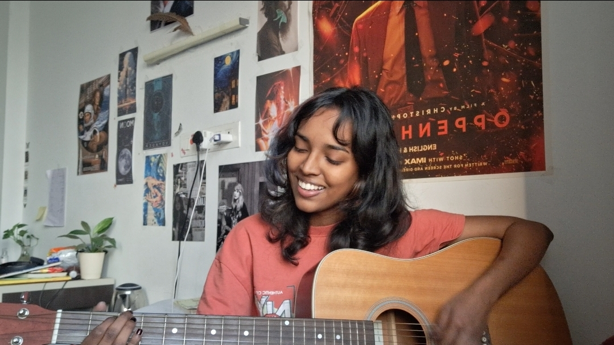

An Attempting Artist
National 1st in school for poetry, 2020. Guitar since 2019, ukulele too. In second year of college, someone made a racist remark. I wrote a poem about it and stumbled onto something called slam poetry. Performed at my first one a week later and won. I write songs. Someday I want to make things - films, music, something that stays with people. I'm working on it.
